<body>
  <div class="reveal innovation">
     <!-- Any section element inside of this container is displayed as a slide -->
     <div class="slides">
        <section>
           <h1>{{page.slide_title}}</h1>
           <h3>a one-hour crash course version of my full-day workshop</h3>
           <p>
              <small>By Tom Johnson / <a href="http://twitter.com/tomjohnson">@tomjohnson</a><br/>
              <a href="https://idratherbewriting.com">idratherbewriting.com</a></small><br/><br/>
              <p><small>Slides: <a href="https://idratherbewriting.com/learnapidoc/slides/crash_course.html">idratherbewriting.com/learnapidoc/slides/crash_course.html</a></small><br/>
              <small>Course: <a href="https://idratherbewriting.com/learnapidoc/">idratherbewriting.com/learnapidoc/</a></small></p>
              <p>
           </p>
        </section>

        <!-- <section>
           <h2>I. Intro to API Documentation</h2>
        </section> -->
        <section>
           <h2>APIs allow systems to interact</h2>
           <figure><a href="http://bit.ly/1DexWM0"></a><figcaption style="font-size: 14px; font-style: italic;">Image from Brent 2.0 on Flickr</figcaption></figure>
        </section>

        <section>
           <h2>API example: Flight booking sites</h2>
           <a href="https://www.orbitz.com/">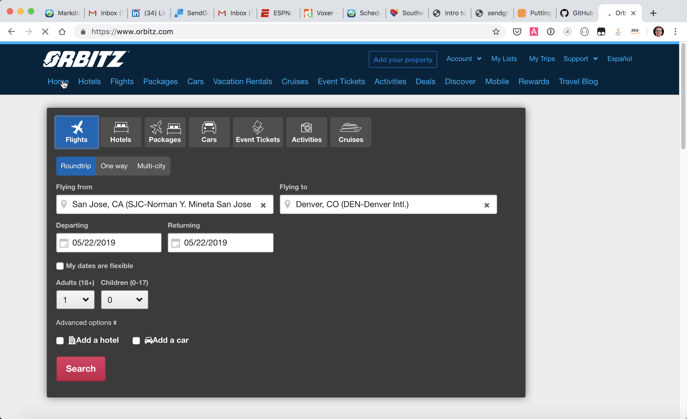</a>
        </section>

        <section>
           <h2>The essence: Requests and responses</h2>
           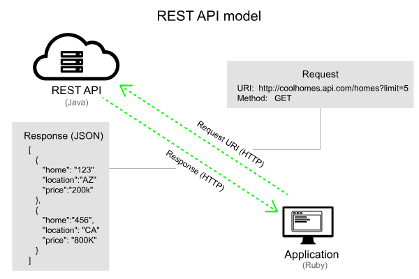
        </section>

        <section>
           <h2>REST API growth phenomenal</h2>
           <a href="http://www.programmableweb.com/news/api-consumers-want-reliability-documentation-and-community/2013/01/07">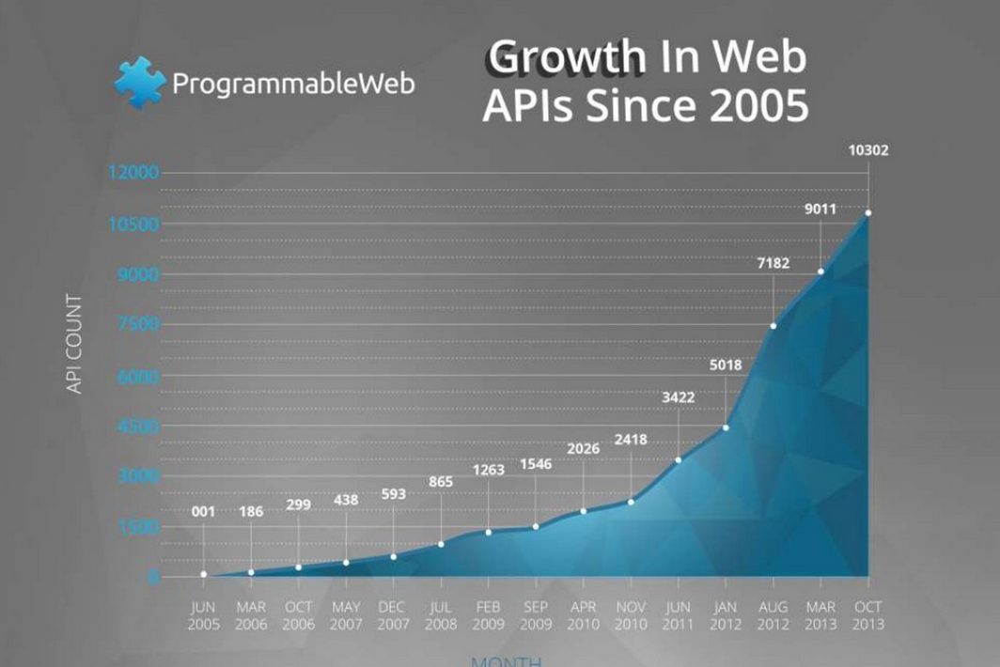</a>
        </section>

        <!-- <section>
           <h2>II. Using an API like a developer</h2>
         </section> -->

         <section>
         <h2>Sample scenario: Retrieve weather</h2>
         <a href="https://idratherbewriting.com/learnapidoc/assets/files/wind-openweathermap.html">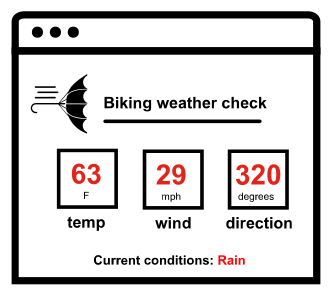</a>
      </section>

      <section>
       <h2>Choose an API</h2>
       <a href="https://openweathermap.org/">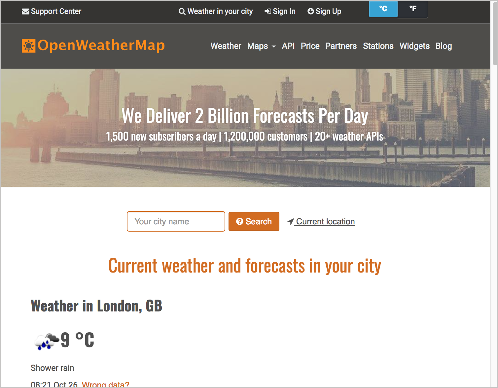</a>
     </section>

     <section>
        <h2>Submit a request</h2>
        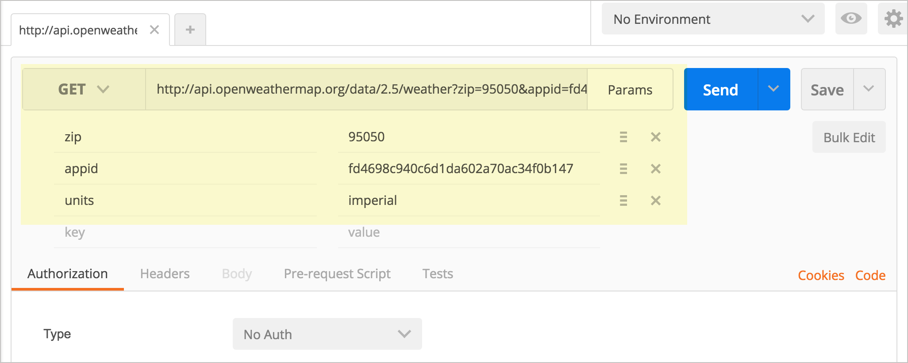
        <div style="clear: both"></div>
        <div class="postman-run-button"
        data-postman-action="collection/import"
        data-postman-var-1="abd0d0741e8206266958"></div>
        <script type="text/javascript">
          (function (p,o,s,t,m,a,n) {
            !p[s] && (p[s] = function () { (p[t] || (p[t] = [])).push(arguments); });
            !o.getElementById(s+t) && o.getElementsByTagName("head")[0].appendChild((
              (n = o.createElement("script")),
              (n.id = s+t), (n.async = 1), (n.src = m), n
            ));
          }(window, document, "_pm", "PostmanRunObject", "https://run.pstmn.io/button.js"));
        </script>
        </section>

        <section>
           <h2>curl common for requests</h2>
           <pre><code data-trim contenteditable>
curl -X GET "https://api.openweathermap.org/data/2.5/weather?zip=95050&appid=fd4698c940c6d1da602a70ac34f0b147&units=imperial"

</code></pre>
</section>
        <!-- <section>
           <h2>III: Documenting API endpoints</h2>
         </section> -->
         <section>
            <h2>Common sections in API endpoint docs</h2>
               <ol>
                 <li>Resource description</li>
                 <li>Endpoints and methods</li>
                 <li>Parameters</li>
                 <li>Request example</li>
                 <li>Response example and schema</li>
               </ol>

         </section>

         <!-- <section>
            <h2>Eventbrite example</h2>
            <a href="https://www.eventbrite.com/platform/api#/reference/event">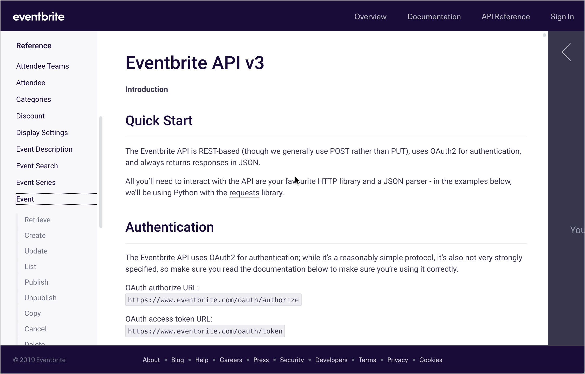</a>
         </section> -->

         <section>
            <h2>Mock example</h2>
            <a href="https://idratherbewriting.com/learnapidoc/docapis_finished_doc_result.html">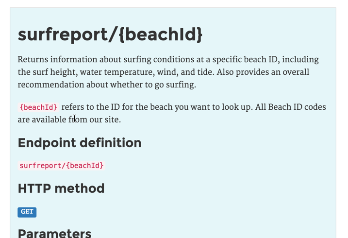</a>
         </section>

         <section><h2>Real example &mdash; Sendgrid</h2>
           <a href="https://sendgrid.com/docs/api-reference/">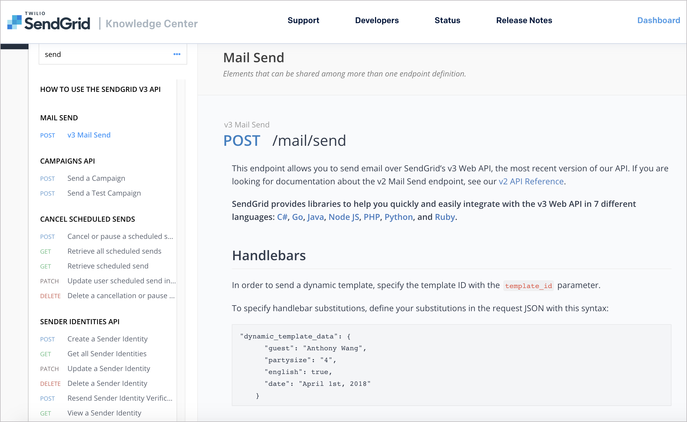</a>
         </section>

         <section><h2>Unique characteristics of API docs</h2>
           <ul>
            <li>Reference section has <a href="https://sendgrid.com/docs/api-reference/">API structure</a></li>
            <li><a href="https://sendgrid.com/docs/api-reference/">Users can try out requests</a></li>
            <li><a href="https://sendgrid.com/docs/for-developers/sending-email/api-getting-started/">Hello-World-like getting started tutorial</a></li>
            <li>Docs must sell the product &mdash; hence custom design</li>
            <li>Reference content structured with <a href="https://api.stoplight.io/v1/versions/E2KbzZkqZQttfyqxp/export/oas.json">OpenAPI spec</a></li>
            <li><a href="https://sendgrid.com/docs/for-developers/">Split between API ref and conceptual content</li>
            <li><a href="https://sendgrid.com/docs/for-developers/sending-email/api-getting-started/">Edit on GitHub</a> buttons &mdash; pull request workflows</li>
            <li>Not many PDF or localization requirements</li>
          </ul>
         </section>

        <!-- <section>
           <h2>IV: OpenAPI and Swagger</h2>
         </section> -->

         <section>
           <h2>OpenAPI specification</h2>
           <a href="https://www.openapis.org/">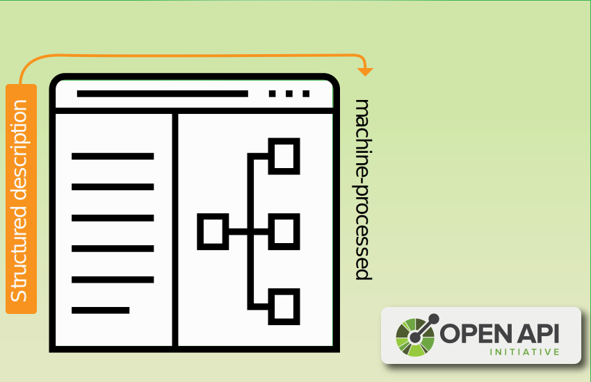</a>
 <aside class="notes">
           <ul>
             <li>Think of it like DITA for web API information</li>
             <li>"OpenAPI" refers to spec, "Swagger" to tooling</li>
           </ul>
         </aside>
         </section>

         <section>
           <h2>Swagger UI Petstore Demo</h2>
           <a href="http://petstore.swagger.io/">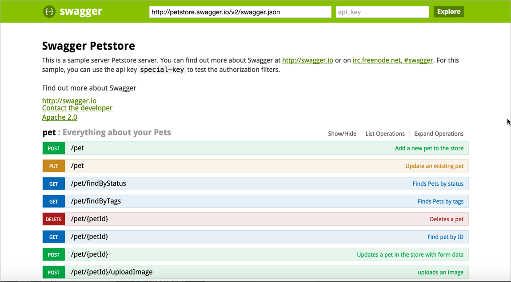</a>
         </section>

<!--
         <section>
           <h2>What engineers want in docs</h2>
           
         </section> -->


        <!-- <section>
           <h2> VI: Conceptual content in API Documentation</h2>
         </section> -->

         <section>
             <h2>Unique conceptual topics</h2>
             <ul>
                 <li>Hello world (Get started)</li>
                 <li>Authorization</li>
                 <li>Status and error codes</li>
                 <li>Rate limiting and thresholds</li>
                 <li>Code samples and tutorials</li>
                 <li>SDKs and sample apps</li>
           </ul>
         </section>

         <section>
           <h2>API authentication and authorization</h2>
           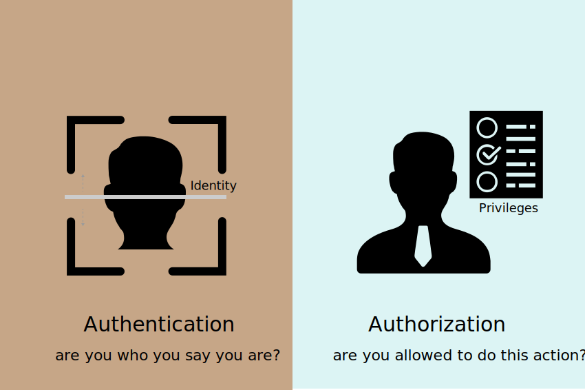
         </section>

         <section>
           <h2>API status and error codes</h2>
           
         </section>

         <section>
           <h2>SDKs and sample apps</h2>
           <a href="https://paypal.github.io/PayPal-PHP-SDK/"></a>
         </section>

<!--
        <section>
           <h2>VII: Publishing API Documentation</h2>
         </section> -->

         <section>
           <h2>Pubs tools developers prefer</h2>
           <a href="https://www.questionpro.com/t/PE5tIZduq7">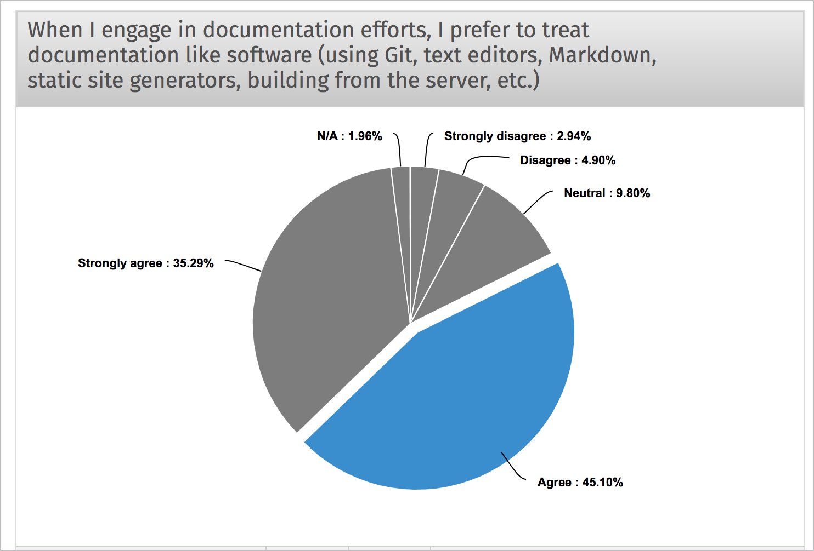</a>
           </section>

           <section>
             <h2>The Docs as Code model</h2>
             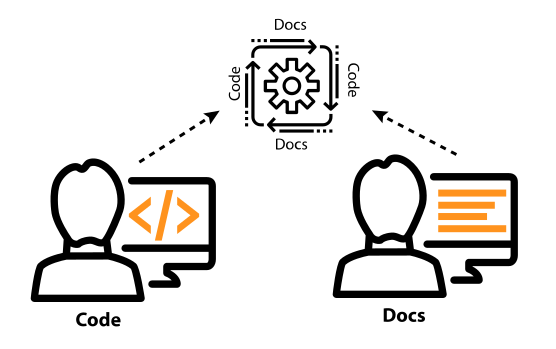
           </section>

           <section>
             <h2>Characteristics of docs as code</h2>
             <ul>
               <li>Lightweight markup (e.g., Markdown)</li>
               <li>Static site generators (e.g., Hugo)</li>
               <li>IDE-like text editor (e.g., Atom)</li>
               <li>Version control to manage content (e.g., Git)</li>
               <li><b>Build from server</b> (e.g., Netlify)</li>
             </ul>
           </section>

           <section>
             <h2>Common API doc tools</h2>
             <ul>
               <li><a href="https://swagger.io/tools/swagger-ui/">Swagger UI</a> | <a href="https://swagger.io/tools/swaggerhub/">Swaggerhub</a></li>
               <li><a href="https://stoplight.io/">Stoplight.io</a></li>
               <li><a href="https://readme.io/">Readme.io</a></li>
               <li><a href="https://github.com/Rebilly/ReDoc">ReDoc</a></li>
               <li><a href="https://readthedocs.org/">Read the Docs</a></li>
               <li><a href="https://www.netlify.com/">Netlify</a></li>
              <li><a href="https://pages.github.com/">GitHub Pages</a></li>
               <li><a href="https://www.staticgen.com/">Static site generators</a></li>
               <li><a href="https://headlesscms.org/">Headless CMS's</a></li>
               <li></li>
             </ul>
             </section>

             <section>
               <h2>A culture of forking and building</h2>
               <a href="https://github.com/tomjoht/documentation-theme-jekyll">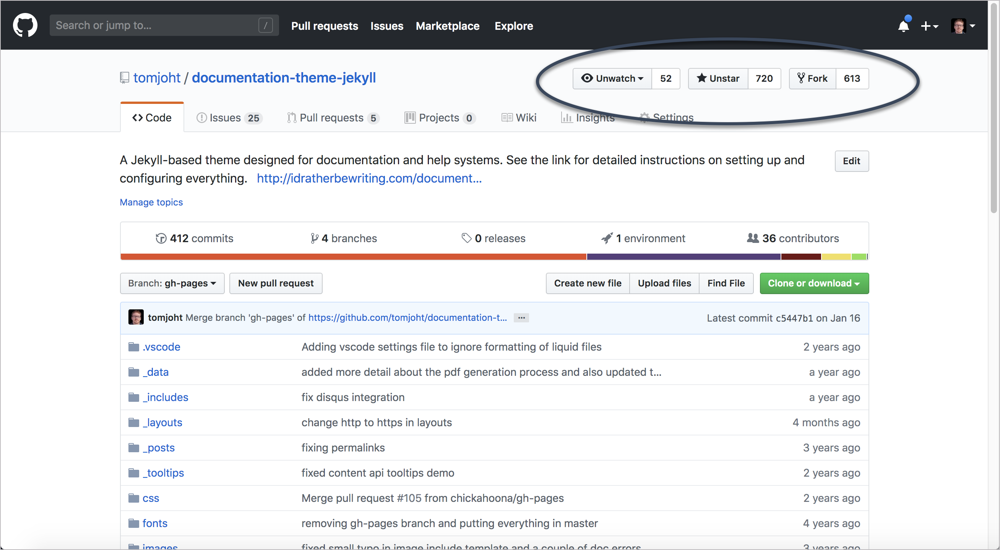</a>

               </section>

           <section>
             <h2>Real-time demonstration</h2>
             <p>Demonstration of docs-as-code publishing...</p>
 </section>

 <section>
   <h2>Why API writers don't attend STC</h2>
   <ul>
     <li>Tools are different (Expo irrelevant)</li>
     <li>Developer audience different</li>
     <li>Doc'ing code isn't a task-based paradigm</li>
     <li>Structure refers to OAS, not DITA</li>
     <li>Technical ramp-up is steep</li>
     <li>Culture is more unconference style</li>
     <li>Open-source tooling model</li>
     </ul>
   </section>


        <!-- <section>
           <h2>VIII: Getting an API doc job and thriving</h2>
         </section> -->

         <section>
           <h2>Getting an API doc job</h2>
           <ul>
         <li>Familiarity with 1-2 programming languages or other technical foundations</li>
         <li>Experience writing docs for a developer audience (show samples)</li>
           </ul>
         </section>

         <section>
           <h2>Solving the biggest problems</h2>
           <blockquote>
             ... the biggest problems with API documentation were also the ones requiring the most technical expertise to solve. Completing, clarifying, and correcting documentation require deep, authoritative knowledge of the API’s implementation. This makes accomplishing these tasks difficult for non-developers or recent contributors to a project. <small>&mdash; Martin Robillard and Gias Uddin</small>
         </blockquote>
         </section>

         <section>
           <h2>Spectrum of involvement</h2>
           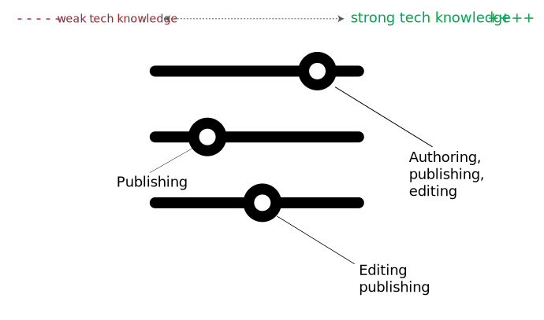
         </section>

  <section>
    <h2>Questions?</h2>
    
    </section>

   <section>
           <h1>The end</h1>
           <div>
              <div style="float:left; padding: 10px;">
                 
              </div>
              <div style="float:left; padding: 10px; text-align: left;">
                 <p><span class="myname">Tom Johnson</span><br/>
                    &mdash; <a href="https://idratherbewriting.com">idratherbewriting.com</a><br/>
                    &mdash;  <a href="http://twitter.com/tomjohnson">@tomjohnson</a><br />
                    &mdash; <a href="mailto:tomjoht@gmail.com">tomjoht@gmail.com</a>
                 </p>
              </div>

	<script src="lib/js/head.min.js"></script>
	<script src="js/reveal.js"></script>

	<script>
		// More info about config & dependencies:
		// - https://github.com/hakimel/reveal.js#configuration
		// - https://github.com/hakimel/reveal.js#dependencies
		Reveal.initialize({
      history: true,
      center: false,
      progress: true,
      slideNumber: true,
			dependencies: [
				{ src: 'plugin/markdown/marked.js' },
				{ src: 'plugin/markdown/markdown.js' },
				{ src: 'plugin/notes/notes.js', async: true },
				{ src: 'plugin/highlight/highlight.js', async: true, callback: function() { hljs.initHighlightingOnLoad(); } }
			]
		});
	</script>
</body>
</html>
